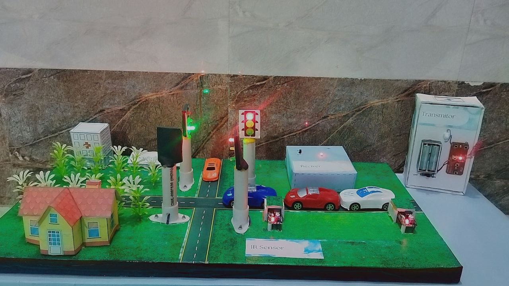

IoT-Based Smart Traffic
Management System (V2I)
Arduino Uno powered intelligent traffic control model using IR sensors for density detection, RF-based ambulance priority override, and gas sensor-based fire detection.
Arduino
IoT
IR Sensors
RF Communication
Gas Sensor
V2I
System Architecture
- Arduino Uno as central controller
- IR sensors for vehicle density detection at each lane
- RF transmitter/receiver module for emergency vehicle override
- Gas sensor for fire / hazard detection
- Signal timing algorithm adapts based on real-time traffic intensity
System Workflow

My Role
- Designed and built the complete mechanical traffic model
- Integrated IR sensors with Arduino Uno for density detection
- Implemented RF-based emergency vehicle prioritization logic
- Collaborated on project presentation and technical documentation
Project Images


Virtual Demonstration
Demonstration of RF-based emergency vehicle override system. The traffic light automatically switches to green for the approaching ambulance.
Project Presentation
Detailed project explanation including system architecture, working mechanism, circuit design, and implementation strategy.
► View Full Presentation (PDF)